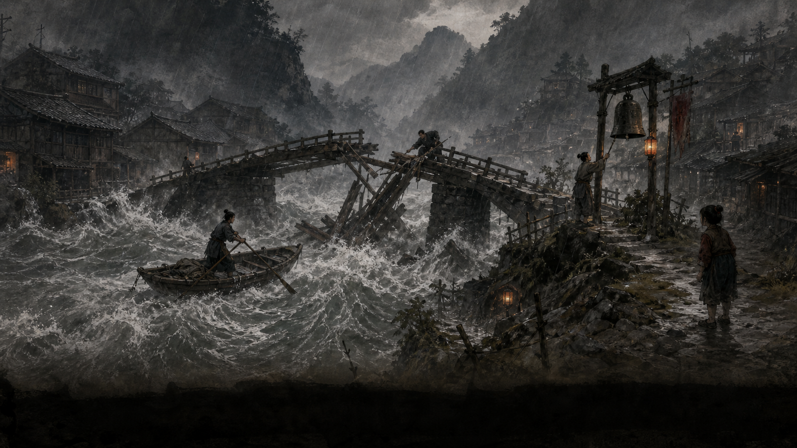

<!doctype html>
<html lang="zh-CN">
<head>
  <meta charset="utf-8">
  <meta name="viewport" content="width=device-width, initial-scale=1, viewport-fit=cover">
  <meta name="apple-mobile-web-app-capable" content="yes">
  <meta name="mobile-web-app-capable" content="yes">
  <meta name="apple-mobile-web-app-status-bar-style" content="black-translucent">
  <meta name="apple-mobile-web-app-title" content="千字村">
  <meta name="theme-color" content="#171512">
  <link rel="apple-touch-icon" href="icon.png">
  <link rel="icon" href="icon.png">
  <title>千字村 · 公开游戏交互原型十一</title>
  <style>
    :root {
      --ink: #171512;
      --ink-soft: #312b24;
      --paper: #e7dcc2;
      --paper-pale: #f3ecd9;
      --paper-deep: #c7b48d;
      --cinnabar: #8e3024;
      --cinnabar-bright: #ad4432;
      --gold: #9a7646;
      --line: rgba(54, 40, 28, .24);
      --muted: #6e604f;
      --dark: #0d0c0b;
      --safe-bottom: max(18px, env(safe-area-inset-bottom));
      --serif: "Songti SC", "Noto Serif SC", "STSong", serif;
      --display: "STKaiti", "KaiTi", "FZKai-Z03", serif;
    }
    * { box-sizing: border-box; }
    html, body, #root { min-height: 100%; margin: 0; }
    html { background: var(--dark); }
    body {
      color: var(--ink);
      font-family: var(--serif);
      font-size: 16px;
      line-height: 1.76;
      overflow-x: hidden;
      background:
        radial-gradient(circle at 16% 8%, rgba(173,137,82,.12), transparent 34%),
        #12100e;
    }
    button { font: inherit; }
    button:focus-visible { outline: 3px solid #d26b52; outline-offset: 3px; }
    .app { min-height: 100dvh; background: var(--paper-pale); }
    .topbar {
      min-height: 58px;
      padding: max(10px, env(safe-area-inset-top)) 18px 10px;
      color: #eee4cb;
      background: rgba(13,12,11,.98);
      display: grid;
      grid-template-columns: 1fr auto;
      align-items: center;
      gap: 12px;
      position: sticky;
      top: 0;
      z-index: 30;
      border-bottom: 1px solid rgba(238,228,203,.16);
    }
    .brand { display: flex; align-items: baseline; gap: 10px; min-width: 0; }
    .brand strong { font-family: var(--display); font-size: 24px; letter-spacing: .18em; white-space: nowrap; }
    .brand span { color: #b9af99; font-size: 13px; white-space: nowrap; }
    .round-count { color: #d6c7a8; font-size: 14px; white-space: nowrap; }
    .workspace { min-height: calc(100dvh - 58px); }
    .scene {
      position: relative;
      min-height: 32dvh;
      background: #1a1714;
      overflow: hidden;
      isolation: isolate;
    }
    .scene img { width: 100%; height: 100%; object-fit: cover; position: absolute; inset: 0; }
    .scene::after {
      content: "";
      position: absolute;
      inset: 0;
      background: linear-gradient(180deg, rgba(7,7,7,.02) 45%, rgba(10,9,8,.78) 100%);
      z-index: 1;
    }
    .scene-caption {
      position: absolute;
      z-index: 2;
      left: 18px;
      right: 18px;
      bottom: 16px;
      color: #f4eddd;
      text-shadow: 0 2px 14px #000;
    }
    .scene-caption span { display: block; color: #d4b982; font-size: 14px; letter-spacing: .14em; }
    .scene-caption strong { display: block; font-family: var(--display); font-size: clamp(24px, 7vw, 34px); line-height: 1.24; margin-top: 4px; }
    .paper {
      min-height: 68dvh;
      padding: 24px 18px calc(112px + var(--safe-bottom));
      background:
        linear-gradient(rgba(255,255,255,.2), rgba(255,255,255,.2)),
        repeating-linear-gradient(0deg, transparent 0 23px, rgba(86,63,37,.028) 24px),
        var(--paper-pale);
    }
    .reading { max-width: 760px; margin: 0 auto; }
    .eyebrow { color: var(--cinnabar); font-size: 14px; letter-spacing: .18em; }
    h1, h2, h3, p { margin-top: 0; }
    h1, h2, h3 { font-family: var(--display); font-weight: 600; text-wrap: balance; }
    h1 { font-size: clamp(34px, 9vw, 52px); line-height: 1.18; margin-bottom: 12px; }
    h2 { font-size: clamp(28px, 7vw, 38px); line-height: 1.28; margin-bottom: 12px; }
    h3 { font-size: 21px; line-height: 1.4; margin-bottom: 8px; }
    p { text-wrap: pretty; }
    .role-reminder {
      display: grid;
      grid-template-columns: 44px 1fr;
      gap: 12px;
      align-items: center;
      margin: 0 0 22px;
      padding: 14px 0;
      border-top: 1px solid var(--line);
      border-bottom: 1px solid var(--line);
    }
    .role-mark {
      width: 44px; height: 44px; border-radius: 50%; display: grid; place-items: center;
      background: var(--ink); color: #f3e7cc; font-family: var(--display); font-size: 22px;
      box-shadow: inset 0 0 0 2px rgba(231,220,194,.24);
    }
    .role-reminder strong { display: block; font-size: 17px; }
    .role-reminder span { display: block; color: var(--muted); font-size: 15px; line-height: 1.55; }
    .lead { font-size: 18px; color: var(--ink-soft); line-height: 1.8; }
    .plain-note { color: var(--muted); font-size: 15px; }
    .testimony-tabs {
      display: flex;
      gap: 8px;
      overflow-x: auto;
      padding: 3px 2px 10px;
      scrollbar-width: none;
    }
    .testimony-tabs::-webkit-scrollbar { display: none; }
    .tab {
      min-height: 44px;
      border: 1px solid var(--line);
      background: rgba(255,255,255,.2);
      color: var(--ink-soft);
      padding: 8px 16px;
      white-space: nowrap;
      cursor: pointer;
    }
    .tab[aria-selected="true"] {
      color: #f7efdd;
      background: var(--cinnabar);
      border-color: var(--cinnabar);
    }
    .witness {
      margin: 6px 0 18px;
      padding: 20px;
      background: rgba(255,255,255,.34);
      border-top: 3px solid var(--cinnabar);
      box-shadow: 0 12px 30px rgba(67,47,28,.08);
    }
    .witness-name { display: flex; align-items: baseline; gap: 10px; margin-bottom: 12px; }
    .witness-name strong { font-family: var(--display); font-size: 24px; }
    .witness-name span { color: var(--muted); font-size: 14px; }
    .witness p:last-child { margin-bottom: 0; }
    .question {
      margin: 24px 0 0;
      padding: 18px;
      color: #5c251d;
      background: rgba(142,48,36,.075);
      border: 1px solid rgba(142,48,36,.22);
      font-size: 17px;
    }
    .option-list, .memory-list, .feedback-grid { display: grid; gap: 14px; }
    .option-card, .memory-card {
      width: 100%;
      text-align: left;
      color: var(--ink);
      background: rgba(255,255,255,.34);
      border: 1px solid var(--line);
      padding: 18px;
      cursor: pointer;
      transition: transform .18s ease, border-color .18s ease, background .18s ease;
    }
    .option-card:hover, .memory-card:hover { transform: translateY(-2px); border-color: rgba(142,48,36,.62); }
    .option-card.is-selected { border: 2px solid var(--cinnabar); background: rgba(142,48,36,.09); padding: 17px; }
    .card-head { display: flex; align-items: baseline; justify-content: space-between; gap: 12px; margin-bottom: 10px; }
    .card-head strong { font-family: var(--display); font-size: 22px; }
    .cost { color: var(--cinnabar); font-size: 14px; white-space: nowrap; }
    .option-card p, .memory-card p { margin-bottom: 8px; }
    .tradeoff { color: var(--muted); font-size: 15px; }
    .capacity {
      position: sticky;
      top: 59px;
      z-index: 20;
      margin: -8px 0 20px;
      padding: 14px 16px;
      background: #211d18;
      color: #f2e8d2;
      box-shadow: 0 10px 24px rgba(0,0,0,.18);
    }
    .capacity-top { display: flex; justify-content: space-between; gap: 12px; align-items: baseline; }
    .capacity strong { font-size: 18px; }
    .capacity span { color: #ff9b80; font-size: 15px; }
    .meter { height: 8px; background: rgba(255,255,255,.14); margin-top: 10px; overflow: hidden; }
    .meter i { display: block; width: 100%; height: 100%; background: var(--cinnabar-bright); }
    .new-memory {
      padding: 16px;
      margin-bottom: 18px;
      border: 1px solid rgba(142,48,36,.42);
      background: rgba(142,48,36,.07);
    }
    .new-memory small { color: var(--cinnabar); display: block; margin-bottom: 6px; }
    .actions { display: grid; grid-template-columns: repeat(3, 1fr); gap: 8px; margin-top: 14px; }
    .action {
      min-height: 46px;
      border: 1px solid var(--line);
      background: rgba(255,255,255,.32);
      color: var(--ink);
      cursor: pointer;
    }
    .action.is-selected { background: var(--ink); color: #f2e7d1; border-color: var(--ink); }
    .consequence {
      margin-top: 16px;
      padding: 16px;
      background: #d8c8a8;
      border-left: 4px solid var(--cinnabar);
    }
    .consequence strong { display: block; margin-bottom: 8px; }
    .consequence ul { margin: 0; padding-left: 1.2em; }
    .consequence li { margin: 5px 0; }
    .feedback-card { padding: 18px; background: rgba(255,255,255,.35); border-top: 1px solid var(--line); }
    .feedback-card span { color: var(--cinnabar); font-size: 14px; letter-spacing: .08em; }
    .feedback-card strong { display: block; font-size: 18px; margin: 4px 0 6px; }
    .feedback-card p { color: var(--muted); margin-bottom: 0; }
    .reaction { padding: 20px; margin: 18px 0; background: var(--ink); color: #eee2c9; }
    .reaction strong { color: #d8bb80; font-family: var(--display); font-size: 22px; }
    .reaction p:last-child { margin-bottom: 0; }
    .bottom-action {
      position: fixed;
      left: 0;
      right: 0;
      bottom: 0;
      z-index: 40;
      padding: 12px 18px var(--safe-bottom);
      background: linear-gradient(180deg, rgba(243,236,217,.08), rgba(243,236,217,.97) 24%);
    }
    .primary, .secondary {
      min-height: 52px;
      border: 0;
      padding: 12px 18px;
      cursor: pointer;
    }
    .primary { width: 100%; color: #fff5e1; background: var(--cinnabar); box-shadow: 0 10px 24px rgba(91,31,23,.24); }
    .primary:disabled { background: #8c8170; color: #e0d8ca; cursor: not-allowed; box-shadow: none; }
    .secondary { color: var(--cinnabar); background: transparent; border: 1px solid rgba(142,48,36,.48); }
    .footer-actions { display: grid; grid-template-columns: auto minmax(0, 1fr); gap: 10px; max-width: 860px; margin: 0 auto; }
    .footer-actions.is-single { grid-template-columns: 1fr; }
    .ending { min-height: 100dvh; background: #090909; color: #f3ead6; position: relative; overflow: hidden; }
    .ending-bg { position: fixed; inset: 0; width: 100%; height: 100%; object-fit: cover; object-position: 52% center; filter: brightness(.78) saturate(.82); }
    .ending-shade { position: fixed; inset: 0; background: linear-gradient(180deg, rgba(4,4,4,.1), rgba(4,4,4,.18) 45%, rgba(4,4,4,.92) 100%); }
    .ending-content {
      position: relative;
      z-index: 2;
      min-height: 100dvh;
      display: flex;
      flex-direction: column;
      justify-content: flex-end;
      padding: max(24px, env(safe-area-inset-top)) 20px calc(112px + var(--safe-bottom));
    }
    .ending-copy { max-width: 860px; }
    .ending-kicker { color: #d6b472; font-size: 14px; letter-spacing: .2em; }
    .ending h1 { color: #fff7e7; font-size: clamp(38px, 10vw, 72px); text-shadow: 0 3px 24px #000; }
    .ending .lead { color: #f0e6d4; max-width: 760px; text-shadow: 0 2px 14px #000; }
    .gaze-line { padding: 16px 0; border-top: 1px solid rgba(255,255,255,.26); font-size: 18px; }
    .gaze-line strong { color: #e2bd75; }
    .echoes { display: grid; gap: 10px; margin-top: 14px; }
    .echo { padding: 14px; background: rgba(15,14,12,.8); border: 1px solid rgba(238,228,203,.2); }
    .echo span { display: block; color: #d26b52; font-size: 14px; }
    .echo strong { display: block; color: #f4ecd9; margin: 2px 0 4px; }
    .echo p { color: #c9beaa; margin-bottom: 0; }
    .ending .bottom-action { background: linear-gradient(180deg, transparent, rgba(7,7,7,.96) 35%); }
    .ending .secondary { color: #f0dfbd; border-color: rgba(240,223,189,.48); }
    .ending-actions { display: grid; grid-template-columns: auto 1fr; gap: 10px; max-width: 860px; margin: 0 auto; }
    .screen-reader { position: absolute; width: 1px; height: 1px; padding: 0; margin: -1px; overflow: hidden; clip: rect(0,0,0,0); white-space: nowrap; border: 0; }
    @media (min-width: 700px) and (max-width: 1099px) {
      .app { max-width: 820px; margin: 0 auto; box-shadow: 0 0 80px rgba(0,0,0,.5); }
      .paper { padding-left: 44px; padding-right: 44px; }
      .bottom-action { left: 50%; width: min(820px, 100%); transform: translateX(-50%); }
      .feedback-grid { grid-template-columns: repeat(2, 1fr); }
    }
    @media (min-width: 1100px) {
      .workspace:not(.ending-workspace) { display: grid; grid-template-columns: minmax(430px, 46%) minmax(600px, 54%); height: calc(100dvh - 58px); overflow: hidden; }
      .scene { height: 100%; min-height: 0; }
      .scene-caption { left: 42px; right: 42px; bottom: 42px; }
      .scene-caption strong { font-size: 42px; }
      .paper { min-height: 0; height: 100%; overflow-y: auto; padding: 52px 7vw 140px; }
      .bottom-action { left: 46%; padding-left: 7vw; padding-right: 7vw; }
      .feedback-grid { grid-template-columns: repeat(2, 1fr); }
      .ending-content { padding: 60px 7vw 128px; }
      .ending-copy { margin-left: auto; margin-right: auto; width: min(86vw, 980px); }
      .echoes { grid-template-columns: repeat(2, 1fr); }
      .ending .bottom-action { left: 0; }
    }
    @media (prefers-reduced-motion: no-preference) {
      .reading, .ending-copy { animation: enter .42s ease both; }
      @keyframes enter { from { opacity: 0; transform: translateY(12px); } to { opacity: 1; transform: translateY(0); } }
    }
  </style>
</head>
<body>
  <div id="root"></div>
  <script src="https://unpkg.com/react@18.3.1/umd/react.development.js" integrity="sha384-hD6/rw4ppMLGNu3tX5cjIb+uRZ7UkRJ6BPkLpg4hAu/6onKUg4lLsHAs9EBPT82L" crossorigin="anonymous"></script>
  <script src="https://unpkg.com/react-dom@18.3.1/umd/react-dom.development.js" integrity="sha384-u6aeetuaXnQ38mYT8rp6sbXaQe3NL9t+IBXmnYxwkUI2Hw4bsp2Wvmx4yRQF1uAm" crossorigin="anonymous"></script>
  <script src="https://unpkg.com/@babel/standalone@7.29.0/babel.min.js" integrity="sha384-m08KidiNqLdpJqLq95G/LEi8Qvjl/xUYll3QILypMoQ65QorJ9Lvtp2RXYGBFj1y" crossorigin="anonymous"></script>
  <script type="text/babel">
    const { useMemo, useState } = React;

    const witnesses = [
      {
        name: "祁生",
        role: "石湾来客 · 懂水的人",
        paragraphs: [
          "石湾被冲毁前，河面也曾先退后涨。桥墩最高的第三道水痕很快被浑水吞没，河底随后传出空鼓一样的响声——那不是普通的水声，而是桥基正在被掏空。",
          "我这次只比断桥早喊了一刻钟。若碑上没有说明水痕在哪里、意味着什么，下一次即使有人看见，也未必知道为什么必须立刻撤离。"
        ]
      },
      {
        name: "柳木",
        role: "木匠 · 被救者",
        paragraphs: [
          "我回桥上抢救的是柳家三代留下的墨斗和凿子，没想到桥面先断了。阿禾已经把一船人送到岸边，仍冒险折返；祁生同时站在上游催人离桥。",
          "水痕解释了危险，姓名解释了谁替别人承担危险。我怕碑只留下方法，救人的关系会像落水的工具一样沉下去。"
        ]
      },
      {
        name: "阿禾",
        role: "摆渡人 · 折返救人者",
        paragraphs: [
          "我折返时不知道桥还能撑多久，只知道柳木还在水里。船靠近断桥时，第三道水痕已经被淹没，桥底正发出祁生所说的空鼓声。",
          "如果后来的人只记得阿禾救人，却不知道第三道水痕是撤离线，他们也许会等一个英雄，而不是提前离开。请先让下次少死人，也别把真正下水的人永远写成无名工具。"
        ]
      }
    ];

    const inscriptions = [
      {
        id: "full",
        title: "留下方法，也留下人",
        cost: 62,
        text: "春洪漫过东桥第三道水痕并有河底空鼓声时，全村须立即撤往北坡。祁生预警，阿禾折返救出柳木。",
        tradeoff: "保留撤离知识、预警来源与救援关系；占字最多。"
      },
      {
        id: "method",
        title: "先让后来的人会撤离",
        cost: 38,
        text: "春洪漫过东桥第三道水痕并有河底空鼓声时，全村须立即撤往北坡。",
        tradeoff: "知识完整；祁生、阿禾与柳木的姓名和关系不会进入公共记忆。"
      },
      {
        id: "people",
        title: "记住谁在洪水中回过头",
        cost: 33,
        text: "东桥春洪中，祁生发出预警，阿禾折返救出落水的柳木。",
        tradeoff: "人物与关系留下；第三道水痕和河底空鼓声的具体含义被删去。"
      }
    ];

    const oldMemories = [
      {
        id: "bridge-old",
        title: "旧桥修缮",
        original: "每逢夏末，柳家木匠检查东桥榫卯，村民共同搬运木料。",
        costs: { keep: 31, compress: 16, delete: 0 },
        consequence: {
          keep: ["保留：检查季节、柳家责任与共同劳动。", "删去：无。", "仍记得：全村后来者。", "未来：桥工有明确传承，也继续把责任系在柳家。"],
          compress: ["保留：夏末检查东桥。", "删去：柳家责任与村民共同搬木的关系。", "仍记得：柳木和当年搬木者暂时记得。", "未来：方法还在，谁应负责会变得含混。"],
          delete: ["保留：无。", "删去：东桥定期检查的时间与共同责任。", "仍记得：柳木及少数年长村民。", "未来：后来者可能只在桥坏后才修。"]
        }
      },
      {
        id: "rescue-old",
        title: "阿禾幼年落水",
        original: "阿禾幼年落水，柳木之父救他上岸，两家因此往来至今。",
        costs: { keep: 29, compress: 14, delete: 0 },
        consequence: {
          keep: ["保留：救命经过与两家关系的来处。", "删去：无。", "仍记得：全村后来者。", "未来：阿禾今日折返不只会被理解为个人勇敢。"],
          compress: ["保留：柳家曾救过阿禾。", "删去：救援发生在幼年，以及两家长期往来。", "仍记得：阿禾与柳木。", "未来：恩情还在，关系的具体年岁开始模糊。"],
          delete: ["保留：无。", "删去：柳家曾救阿禾以及两家往来的来处。", "仍记得：阿禾与柳木仍会记得一段时间。", "未来：后来者会把今日折返理解为一次孤立的英雄行为。"]
        }
      }
    ];

    function Topbar({ ending }) {
      if (ending) return null;
      return <header className="topbar"><div className="brand"><strong>千字村</strong><span>公开游戏原型十一</span></div><div className="round-count">第 1 / 15 回合</div></header>;
    }

    function Scene() {
      return <section className="scene" aria-label="暴雨冲垮东桥的场景"><div className="scene-caption"><span>第一回合 · 第零年春</span><strong>东桥洪水</strong></div></section>;
    }

    function RoleReminder() {
      return <div className="role-reminder"><div className="role-mark">守</div><div><strong>你是这一任守字人</strong><span>你听取证词、整理旧文，决定千字碑上还能留下什么；刻字匠只负责依照你的定稿更换碑片。</span></div></div>;
    }

    function TestimonyScreen({ onNext }) {
      const [active, setActive] = useState(0);
      const witness = witnesses[active];
      return <>
        <Scene />
        <main className="paper"><div className="reading" data-screen-label="亲历者证词">
          <div className="eyebrow">第一步 · 弄清发生了什么</div>
          <h1>桥断之后，谁的说法要留给后来的人？</h1>
          <RoleReminder />
          <p className="lead">暴雨连下三日，东桥桥墩最高的第三道水痕——全村撤往北坡的最后警戒线——被浑水吞没。桥面从中折断，柳木和祖传工具一起落进河里。</p>
          <p>阿禾调转已经靠岸的船去救柳木；祁生站在上游喊出石湾毁村前听过的河底声。三个人都经历了同一场洪水，却希望后来者记住不同的部分。</p>
          <div className="testimony-tabs" role="tablist" aria-label="选择亲历者">
            {witnesses.map((item, index) => <button key={item.name} className="tab" role="tab" aria-selected={active === index} onClick={() => setActive(index)}>{item.name}</button>)}
          </div>
          <article className="witness" aria-live="polite"><div className="witness-name"><strong>{witness.name}</strong><span>{witness.role}</span></div>{witness.paragraphs.map((paragraph) => <p key={paragraph}>{paragraph}</p>)}</article>
          <div className="question">你无法把所有细节都写进碑里。下一步不是评判谁说得对，而是比较：哪一种损失，是村庄以后必须承担的？</div>
        </div></main>
        <BottomAction label="比较他们想留下什么" onClick={onNext} />
      </>;
    }

    function InscriptionScreen({ selected, onSelect, onNext, onBack }) {
      return <>
        <Scene />
        <main className="paper"><div className="reading" data-screen-label="比较候选碑文">
          <div className="eyebrow">第二步 · 决定新事如何进入碑文</div>
          <h2>同一场洪水，可以留下三种未来</h2>
          <p className="lead">三段候选文字都是真的，但没有一段能保存全部真实。选择后，其他版本仍会留在这里，你可以反复比较和改选。</p>
          <div className="option-list">
            {inscriptions.map((option) => <button key={option.id} className={`option-card ${selected === option.id ? "is-selected" : ""}`} onClick={() => onSelect(option.id)} aria-pressed={selected === option.id}><div className="card-head"><strong>{option.title}</strong><span className="cost">占 {option.cost} 字</span></div><p>{option.text}</p><div className="tradeoff">代价：{option.tradeoff}</div></button>)}
          </div>
        </div></main>
        <BottomAction backLabel="返回证词" onBack={onBack} label={selected ? "将这段作为候选碑文" : "先选择一段候选碑文"} disabled={!selected} onClick={onNext} />
      </>;
    }

    function EditorScreen({ inscription, edits, setEdit, onNext, onBack }) {
      const selectedInscription = inscriptions.find((item) => item.id === inscription) || inscriptions[0];
      const saved = oldMemories.reduce((total, memory) => total + (memory.costs.keep - memory.costs[edits[memory.id] || "keep"]), 0);
      const total = 1012 - saved;
      const over = Math.max(0, total - 1000);
      const chosenMemory = oldMemories.find((memory) => edits[memory.id] && edits[memory.id] !== "keep");
      const chosenAction = chosenMemory ? edits[chosenMemory.id] : null;
      return <>
        <Scene />
        <main className="paper"><div className="reading" data-screen-label="整理旧碑文">
          <div className="capacity"><div className="capacity-top"><strong>碑面 {total} / 1000 字</strong><span>{over > 0 ? `还需缩短 ${over} 字` : `已留出 ${1000 - total} 字`}</span></div><div className="meter"><i style={{ width: `${Math.min(100, total / 10)}%` }}></i></div></div>
          <div className="eyebrow">第三步 · 为新记忆腾出位置</div>
          <h2>碑面已满，旧事必须改变</h2>
          <p className="lead">你选择的新碑文不会自动挤走最旧的文字。请明确决定哪一段旧文保持原样、压缩或磨去；所有旧卡片始终保留在页面中，直到封存。</p>
          <div className="new-memory"><small>本年候选碑文 · {selectedInscription.cost} 字</small><strong>{selectedInscription.title}</strong><p>{selectedInscription.text}</p></div>
          <div className="memory-list">
            {oldMemories.map((memory) => {
              const action = edits[memory.id] || "keep";
              return <article className="memory-card" key={memory.id}><div className="card-head"><strong>{memory.title}</strong><span className="cost">当前 {memory.costs[action]} 字</span></div><p>{memory.original}</p><div className="actions" role="group" aria-label={`整理${memory.title}`}><button className={`action ${action === "keep" ? "is-selected" : ""}`} onClick={() => setEdit(memory.id, "keep")}>保留原文</button><button className={`action ${action === "compress" ? "is-selected" : ""}`} onClick={() => setEdit(memory.id, "compress")}>压缩</button><button className={`action ${action === "delete" ? "is-selected" : ""}`} onClick={() => setEdit(memory.id, "delete")}>磨去</button></div></article>;
            })}
          </div>
          {chosenMemory ? <div className="consequence" aria-live="polite"><strong>你正在改变「{chosenMemory.title}」</strong><ul>{chosenMemory.consequence[chosenAction].map((line) => <li key={line}>{line}</li>)}</ul></div> : <div className="question">容量仍超出 12 字。至少选择一段旧记忆进行压缩或磨去，才可以请刻字匠更换碑片。</div>}
        </div></main>
        <BottomAction backLabel="返回候选碑文" onBack={onBack} label={over > 0 ? `还需缩短 ${over} 字` : "请刻字匠更换碑片"} disabled={over > 0} onClick={onNext} />
      </>;
    }

    function SealScreen({ inscription, edits, onNext, onBack }) {
      const selectedInscription = inscriptions.find((item) => item.id === inscription) || inscriptions[0];
      const changed = oldMemories.find((memory) => edits[memory.id] && edits[memory.id] !== "keep") || oldMemories[0];
      const action = edits[changed.id] || "compress";
      const detail = changed.consequence[action];
      return <>
        <Scene />
        <main className="paper"><div className="reading" data-screen-label="本年封存">
          <div className="eyebrow">第一回合封存 · 刻字匠已更换碑片</div>
          <h2>石屑落下以后，村庄开始照着新文字理解这场洪水</h2>
          <div className="reaction"><strong>碑前的人</strong><p>{selectedInscription.id === "method" ? "祁生逐字核对第三道水痕的位置。阿禾没有在碑上听见自己的名字，只低声说：至少下一次，人们不会等我回头。柳木看着空出的姓名位置，没有再说话。" : selectedInscription.id === "people" ? "阿禾让刻字匠先念祁生的名字。祁生却抬头看了一眼桥墩：人们会记得我们，但未必知道下一次为什么必须离开。" : "三个人都在碑上听见了自己的那部分事实。刻字匠提醒你，为这些细节腾出的每一个字，都来自另一段被缩短的旧事。"}</p></div>
          <div className="feedback-grid">
            <div className="feedback-card"><span>保留了什么</span><strong>{selectedInscription.title}</strong><p>{selectedInscription.text}</p></div>
            <div className="feedback-card"><span>删去了什么</span><strong>{detail[1].replace("删去：", "")}</strong><p>这不是删去一个人，而是删去一项具体事实进入公共记忆的资格。</p></div>
            <div className="feedback-card"><span>谁仍然记得</span><strong>{detail[2].replace("仍记得：", "")}</strong><p>私人记忆会随人衰老、离村或死亡，不能稳定传给后来者。</p></div>
            <div className="feedback-card"><span>未来可能影响什么</span><strong>{detail[3].replace("未来：", "")}</strong><p>这项后果不会立刻发生；当关系、知识或身份再次被需要时，它会以「记忆回声」返回。</p></div>
          </div>
          <div className="question">完整游戏会继续走过十四个回合。这个视觉原型现在跳到终局，检验三十年后人物如何带着这些选择生活。</div>
        </div></main>
        <BottomAction backLabel="返回整理" onBack={onBack} label="三十年后，去看看村庄" onClick={onNext} />
      </>;
    }

    function EndingScreen({ inscription, edits, onRestart }) {
      const [beat, setBeat] = useState(0);
      const rescueRelationDeleted = edits["rescue-old"] === "delete";
      const methodKept = inscription === "full" || inscription === "method";
      const peopleKept = inscription === "full" || inscription === "people";
      const beats = [
        <><div className="ending-kicker">第三十年 · 洪水后的清晨</div><h1>你回到碑前。<br />他们先看见了你。</h1><p className="lead">没有人知道守字人站在村庄之外，也没有人能读到那些已经磨去的句子。可当你抬头时，六个人都停下手里的事，望向同一个位置。</p></>,
        <><div className="ending-kicker">人物命运 · 阿禾与柳木</div><h1>一次折返，被记成了怎样的一生？</h1><div className="gaze-line"><strong>阿禾：</strong>{peopleKept ? "“碑上记得我回过头。后来每逢水涨，都有人先等我上船，像一个名字能替所有人判断危险。”" : "“那次折返没有留下名字。可柳木一直记得——至少在他还记得我以前。”"}</div><div className="gaze-line"><strong>柳木：</strong>{rescueRelationDeleted ? "“年轻人只知道阿禾曾救过我，不知道我父亲也曾把他从水里抱上来。我们两家的往来，被说成了一天的英雄故事。”" : "“孩子们知道阿禾为何回头：不是天生的英雄，是一段跨过两代人的相救。”"}</div></>,
        <><div className="ending-kicker">人物命运 · 祁生</div><h1>村庄用了他的知识，也决定是否记得他是谁。</h1><div className="gaze-line"><strong>祁生：</strong>{methodKept ? "“第三道水痕救了人。有人照着碑上的字敲钟，却仍把那套方法叫作村里的旧规，没有人再问它从哪座被冲毁的村庄来。”" : "“他们记得我在桥边喊过，却没留下我为什么敢喊。后来人愿意纪念一次预警，不一定愿意相信下一次预警。”"}</div></>,
        <><div className="ending-kicker">碑外残响 · 只有守字人能看见</div><h1>被磨去的并没有回来。<br />它们只是最后一次经过你。</h1><div className="echoes"><div className="echo"><span>未能成为公共记忆</span><strong>{peopleKept ? "一次关系的全部来处" : "祁生、阿禾与柳木在洪水中的姓名"}</strong><p>知情者仍可能记得，但这段记忆不会稳定交给后来者。</p></div><div className="echo"><span>因你的整理而改变</span><strong>{rescueRelationDeleted ? "柳家曾救过幼年的阿禾" : "旧桥修缮中的共同责任"}</strong><p>{rescueRelationDeleted ? "两代人的相救被压成了一个人的英雄故事。" : "方法继续存在，人物之间的亏欠与回报也继续被询问。"}</p></div></div></>,
        <><div className="ending-kicker">把红线交给下一任守字人</div><h1>小满没有问你，<br />当年是否选对。</h1><p className="lead">她接过红线、刻字簿和那一千字。村民仍看着你。不是审判，也不是感谢——他们只是活在你留下的文字里。</p><div className="gaze-line"><strong>小满：</strong>“请告诉我：下一次碑面再满时，我应该先保护答案，还是先保护人们仍有资格追问？”</div></>
      ];
      return <main className="ending" data-screen-label="终局村民凝视"><div className="ending-shade"></div><div className="ending-content"><div className="ending-copy" aria-live="polite">{beats[beat]}</div></div><div className="bottom-action"><div className="ending-actions"><button className="secondary" onClick={beat === 0 ? onRestart : () => setBeat(beat - 1)}>{beat === 0 ? "重看本回合" : "上一段"}</button><button className="primary" onClick={beat === beats.length - 1 ? onRestart : () => setBeat(beat + 1)}>{beat === beats.length - 1 ? "重新开始原型" : beat === 0 ? "抬头，看清他们" : "继续听"}</button></div></div></main>;
    }

    function BottomAction({ label, onClick, disabled, backLabel, onBack }) {
      return <div className="bottom-action"><div className={`footer-actions ${onBack ? "" : "is-single"}`}>{onBack ? <button className="secondary" onClick={onBack}>{backLabel}</button> : null}<button className="primary" disabled={disabled} onClick={onClick}>{label}</button></div></div>;
    }

    function App() {
      const [screen, setScreen] = useState(0);
      const [inscription, setInscription] = useState("");
      const [edits, setEdits] = useState({});
      const ending = screen === 4;
      const restart = () => { setScreen(0); setInscription(""); setEdits({}); window.scrollTo(0, 0); };
      const go = (next) => { setScreen(next); window.scrollTo(0, 0); };
      const content = useMemo(() => {
        if (screen === 0) return <TestimonyScreen onNext={() => go(1)} />;
        if (screen === 1) return <InscriptionScreen selected={inscription} onSelect={setInscription} onBack={() => go(0)} onNext={() => go(2)} />;
        if (screen === 2) return <EditorScreen inscription={inscription} edits={edits} setEdit={(id, value) => setEdits((current) => ({ ...current, [id]: value }))} onBack={() => go(1)} onNext={() => go(3)} />;
        if (screen === 3) return <SealScreen inscription={inscription} edits={edits} onBack={() => go(2)} onNext={() => go(4)} />;
        return <EndingScreen inscription={inscription} edits={edits} onRestart={restart} />;
      }, [screen, inscription, edits]);
      return <div className="app"><Topbar ending={ending} /><div className={`workspace ${ending ? "ending-workspace" : ""}`}>{content}</div></div>;
    }

    ReactDOM.createRoot(document.getElementById("root")).render(<App />);
  </script>
</body>
</html>
